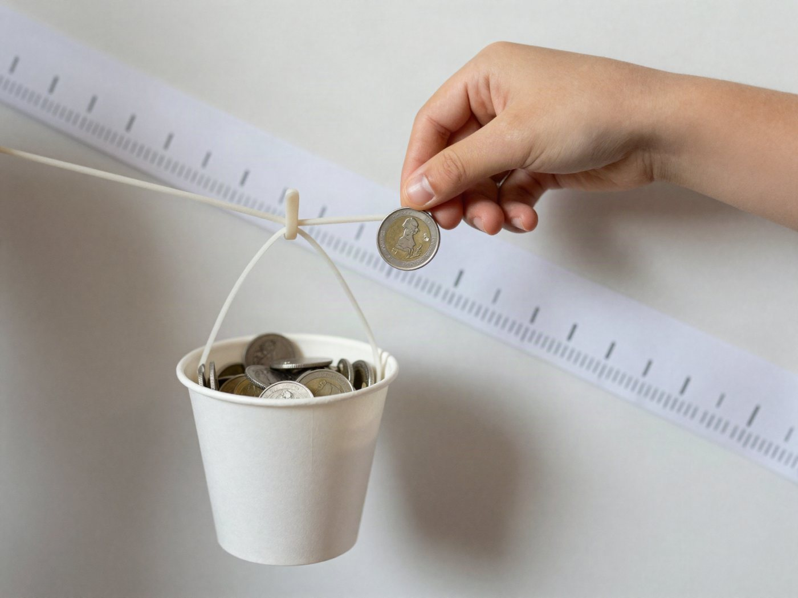

전체 단원 › 실험·활동 › 3~4학년 과학
고무줄 용수철저울

고무줄이 늘어나는 길이로 물건의 무게를 비교해요. 100원 동전이 우리 집 저울의 추가 돼요.
30분 · 난이도 ★★☆ 보통
준비물
- 우유팩 1개 — 펼쳐서 길쭉한 판(약 30cm)으로 써요
- 고무줄 2~3개 — 굵기가 같은 노란 고무줄
- 클립 3개 — 걸이와 고리용
- 종이컵 1개와 실 — 실 3가닥으로 매달아 바구니를 만들어요
- 100원 동전 10개 — 무게를 재는 기준 추 (1개 약 5.4g)
- 테이프, 가위 — 고정하고 오리기용
- 눈금판 도안 — 아래에서 내려받아 인쇄해요
만드는 방법
- 판 만들기
우유팩을 펼쳐 세로로 긴 판을 만들고, 맨 위에 클립을 꽂아 걸이를 만들어요. 판은 벽이나 문에 테이프로 단단히 붙여요. - 바구니 매달기
종이컵 테두리에 구멍 3개를 내고 실을 묶어 바구니를 만들어요. 고무줄을 걸이에 걸고, 고무줄 아래쪽에 클립 고리를 끼워 바구니를 매달아요. - 눈금판 붙이기
도안의 눈금판을 오려 판에 붙여요. 빈 바구니일 때 클립 고리가 가리키는 곳이 0이 되도록 맞춰요. - 동전으로 재기
동전을 2개씩 넣으면서 고리가 몇 칸 내려가는지 기록표에 적어요. 맨 위 사진처럼요! - 물건 무게 비교하기
동전을 빼고 지우개, 연필, 작은 장난감을 넣어 눈금을 읽어요. "지우개는 동전 몇 개만큼 무거울까?"
관찰해 봐요
- 동전이 2개씩 늘어날 때마다 고무줄도 비슷하게 늘어나나요?
- 고무줄을 2개 겹쳐 걸면 어떻게 달라지나요?
- 바구니를 비우면 고리가 다시 0으로 돌아오나요?
왜 그럴까?
물건이 무거울수록 지구가 더 세게 아래로 끌어당겨요. 그래서 고무줄이 더 길게 늘어나요. 늘어난 길이를 보면 어느 쪽이 더 무거운지 알 수 있어요.